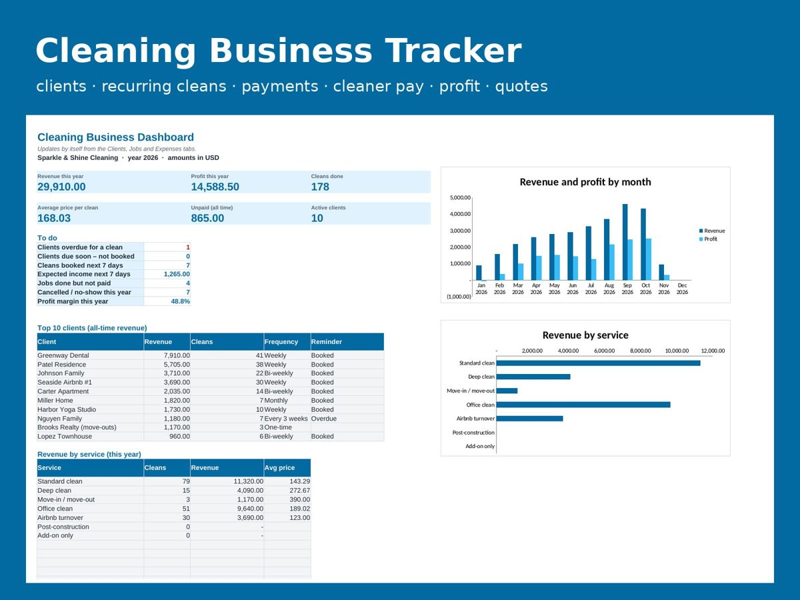

Cleaning Business Client & Job Tracker (Recurring Cleans, Payments, Profit, Quote Calculator) – Excel & Google Sheets
Run your house-cleaning or janitorial business from one simple spreadsheet: keep every client's frequency, price and key notes, log each clean, see who hasn't paid, what you paid your cleaners and what profit is left. Recurring clients get a 'next clean due' date and turn red when they are overdue, and a quote calculator prices a new home in seconds.
Get it on Gumroad – US$19, one-time
What's inside
- Client list for up to 100 clients: frequency (weekly, bi-weekly, every 3 weeks, monthly), usual service, agreed price, access/key and pet notes
- Automatic last clean, next clean due and reminders: Overdue, Due soon – book, Booked
- Job log for 1,000 cleans: client price fills in by itself, extras, discounts, supplies, status and paid/unpaid
- Cleaner pay per job from hourly rates, and profit per job, per month and per year
- Quote calculator: bedrooms, bathrooms, square feet, deep/move-out multipliers, extras and recurring discounts
- Monthly summary and expenses tracker (supplies, fuel, insurance, ads)
- Dashboard with top 10 clients, revenue by service, unpaid total and charts; blank copy plus a sample copy
How it works
- Open the file in Excel, or upload it to Google Drive and open with Google Sheets.
- Read the "Start Here" tab (2 minutes). Yellow cells are yours to fill in, grey cells calculate by themselves.
- Type your own numbers; the dashboard, charts and alerts update as you go.
Questions
Does it work in Google Sheets?Yes. Upload the .xlsx file to Google Drive, open it with Google Sheets, and all formulas, drop-down lists and conditional formatting keep working. No macros are used.
Which Excel versions are supported?Excel 2010 or newer on Windows and Mac, including Microsoft 365. Numbers on iPad/Mac and LibreOffice also open it, with small cosmetic differences.
What do I get after paying?An instant download of a ZIP with two files: a blank copy ready for your numbers and a copy filled with sample data so you can see how every sheet works. Start on the "Start Here" tab.
Can I use my own currency?Yes. Pick the currency symbol once in Settings and every sheet follows.
What if it is not for me?Email within 14 days and you get a refund.